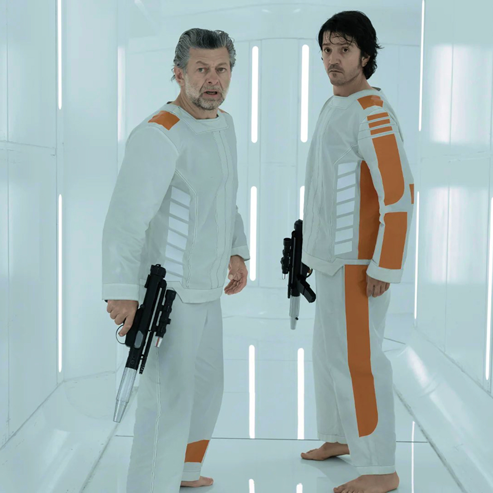
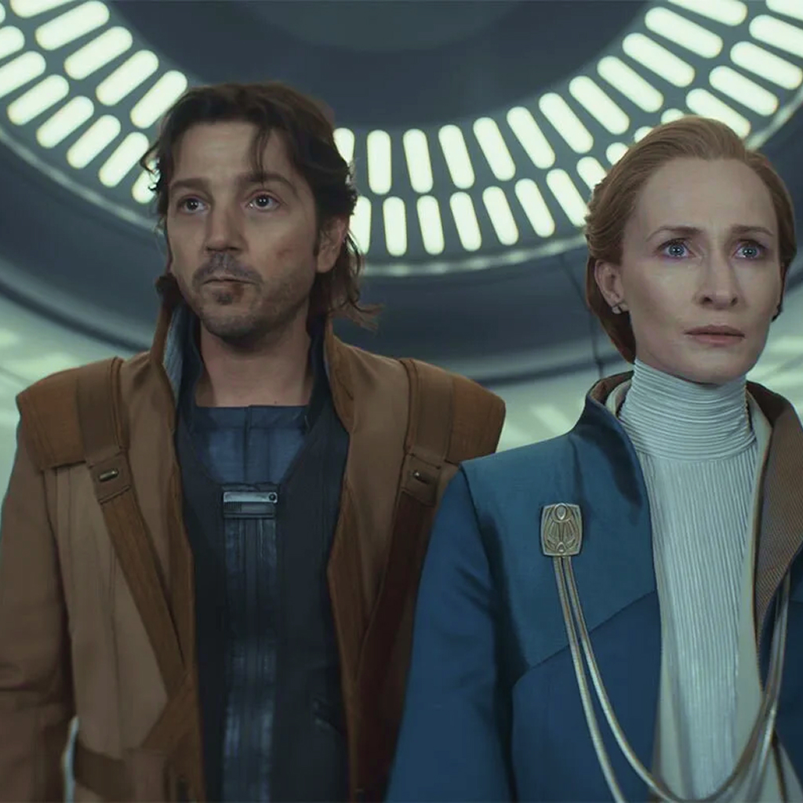

Season 1
Cassian Andor is a cynical survivor who gets pulled into a growing rebellion, forcing him to choose between staying safe and fighting the Empire.
After a deadly encounter with Imperial officers, Cassian is recruited by rebel operative Luthen Rael for a daring heist. As the Empire tightens its grip, Cassian faces an Imperial prison. His journey turns personal survival into resistance.

Season 2
Cassian Andor becomes a key rebel operative while the rebellion evolves into a movement powerful and resourceful enough to challenge the Empire.
The resistance against the Empire grows stronger: political leaders risk their careers for the rebellion and, when the Empire brutally massacre the population of a planet for its resources, the rebellion enters a whole new phase.